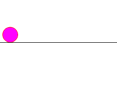

2014-2015 第二学期八年级Flash动画制作教学设计
作者：TeliuTe 来源：基础教程网
三、学会动画步骤 返回目录 下一课
（一）教学设计
1、学习目标：
2、注意事项：绕过弯来，既不要跳也不要落，一楼过了二楼
3、教学过程：
1）教师准备学案和板书；
2）学生整队进入，开机抄黑板上笔记；
3）教师讲解板书演示操作；
4）学生打指法、日志、完成操作；
5）教师打勾记录学生指法成绩，检查日志和操作；
注：学生抄完笔记就开始打指法、日志，老师讲完后再继续完成；
（二）板书设计(学生笔记)
31-3制作动画步骤
1.动画是位置变化，原来在左边，现在在右边
2.先画原来的位置，再移动到另一边
3.插入图层，放一个不动的参照物
4.保存，测试影片
操作图示：

（三）课后记
第3课 学会动画步骤
1.打开flash，用椭圆工具，左边画小球
2.在第10帧，插关键帧，一道右边
3.点插入图层，用铅笔画一条线
4.动画一般是位置变化，跟原来不同。
5.画一个运动小球
--
2015年03月12日 星期四 19:23
--
应该先讲，不应该让先自己试，不用等指法打完
自己试好多都是错的，先培养正确的方法步骤
--
第1帧，第10帧，创建补间动画
把这三个步骤反复讲，检查的方法拖红色要说，拖边框有的会错
--
前面没做出来的，要问同学，学生有些蒙住了，卡住了也不问
不知道这个班风，之前老问后面又不问，问了说不会不讲
--
这节课要把方法掌握，前面第二节就应该学会的，
先做一个范例，当然是有元件的，小球一边转一边滚的
--
元件只有在测试的时候能看到，
有的把线画到小球里了，也不行
--
左脚右脚的例子，动画要有变化，先在左然后是右
桌面图标没有的让帮着弄一下，以后把图标放到压缩包里，直接一块用
--
第一组的四个男生，比着玩过去又叫过来重新讲了一遍，会了
不抄笔记，也不打日志，学习方法不对
返回目录 下一课
本教程由86团学校TeliuTe制作|著作权所有
基础教程网：http://teliute.org/
美丽的校园……
转载和引用本站内容，请保留作者和本站链接。